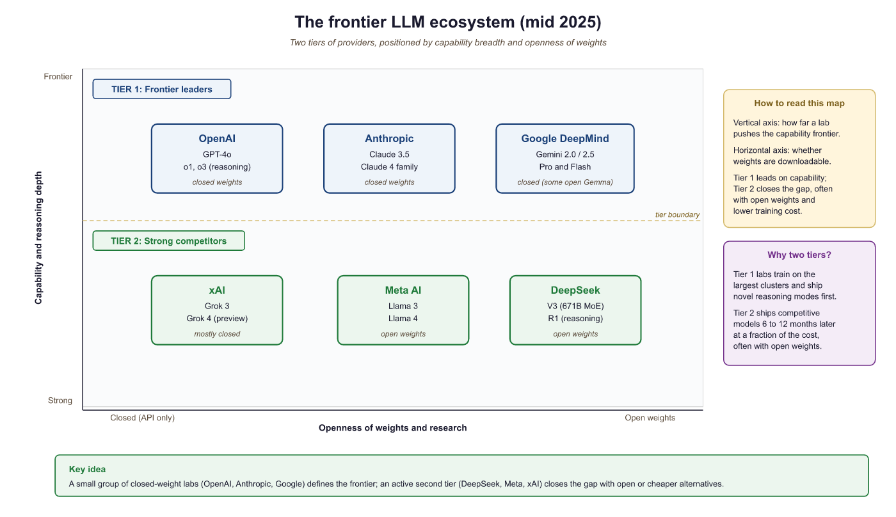
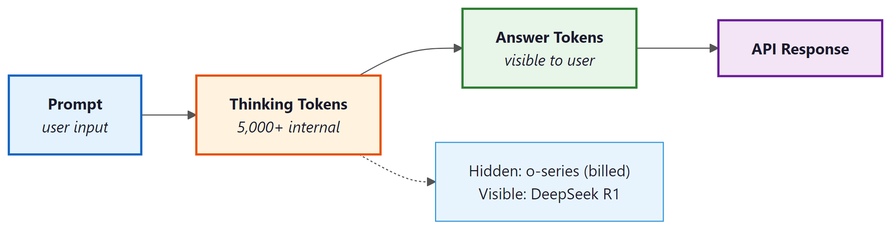
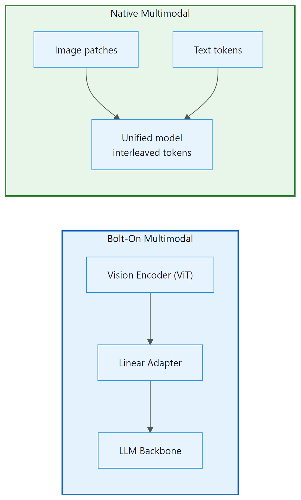

Behind every closed-source frontier model is a technical report that tells you everything except the part you actually wanted to know.
Bert, Redaction Savvy AI Agent
Prerequisites
This section assumes familiarity with the transformer architecture from Section 4.1 and the pre-training concepts from Section 6.1 (landmark models). Understanding of Section 17.1 and alignment from Section 6.1 (InstructGPT discussion) provides context for the post-training techniques mentioned here.
Why study closed-source models? Although their weights and training details remain proprietary, frontier closed-source models set the benchmark for what is possible with large language models. Understanding their capabilities, architectural hints, and positioning helps practitioners choose the right tool for each task, anticipate where the field is headed, and recognize the gap (or lack thereof) between proprietary and open alternatives. Building on the historical model lineage from Section 6.1, this section maps the landscape as of early 2025, with notes on rapidly evolving developments.
7.1.1 The Frontier Model Landscape
The term "frontier model" refers to the most capable AI systems available at any given time. As of 2025, three companies consistently define the frontier: OpenAI, Anthropic, and Google DeepMind. Several other organizations, including xAI, Cohere, and Mistral, compete in specific capability niches. The competitive dynamics are intense, with new model releases arriving every few months and benchmark leads changing hands regularly.
What distinguishes these frontier models from their predecessors is not merely scale. They incorporate architectural refinements (mixture of experts, extended context mechanisms), sophisticated post-training alignment procedures (RLHF, constitutional AI, RLAIF as detailed in Chapter 16), and increasingly, native multimodal capabilities that allow a single model to process text, images, audio, and video within a unified architecture.

7.1.2 OpenAI: GPT-4o and the o-Series
The pace of frontier model releases has become so rapid that by the time a benchmark paper finishes peer review, the model it evaluates may already have two successors. AI benchmarking is like reviewing a restaurant that changes its entire menu every quarter.
GPT-4o: Multimodal Unification
GPT-4o (the "o" stands for "omni") represents OpenAI's push toward native multimodality. Unlike earlier systems that bolted separate vision encoders onto a text model, GPT-4o processes text, images, and audio within a single end-to-end architecture. This unification means the model can respond to a spoken question about an image without passing through separate speech-to-text and image-captioning pipelines, reducing latency and enabling richer cross-modal reasoning.
Key technical characteristics of GPT-4o include:
- Context window: 128K tokens input, 16K tokens output
- Multimodal input: Text, images, audio natively; video through frame sampling
- Latency: Average response times of 320ms for audio, substantially faster than the GPT-4 Turbo predecessor
- Pricing: Significantly lower per-token costs than GPT-4 Turbo, making it the default choice for most applications
Who: A CTO at a legal AI startup evaluating closed-source frontier models for a contract review and risk analysis product.
Situation: The platform needed to extract key clauses, identify risks, and generate plain-language summaries from complex commercial contracts ranging from 10 to 200 pages.
Problem: GPT-4o offered strong general capabilities but had a 128K token limit that could not handle the longest contracts in a single pass. Claude 3.5 Sonnet supported 200K tokens but was more expensive per token. Gemini 2.0 Pro offered 1M token context but showed weaker performance on legal nuance in early testing.
Dilemma: Optimize for cost (GPT-4o with chunking), context length (Gemini for single-pass processing), or quality on legal tasks (Claude, which scored highest on their legal benchmark but at higher per-token cost).
Decision: They implemented a tiered approach: Claude 3.5 Sonnet for contracts under 180K tokens (85% of their volume) and GPT-4o with a map-reduce chunking strategy for longer documents.
How: The team built a routing layer that estimated contract token count, selected the appropriate model, and used standardized output schemas across both providers. They ran a 500-contract evaluation comparing all three models on extraction accuracy, risk identification F1 score, and cost.
Result: Claude achieved 91% extraction accuracy versus GPT-4o's 87% and Gemini's 84% on their legal benchmark. The tiered approach reduced costs by 30% compared to using Claude for everything, while maintaining 90%+ accuracy across all contract lengths.
Lesson: No single frontier model dominates all dimensions. Building a model routing layer that selects providers based on task requirements (context length, domain accuracy, cost) often outperforms committing to a single vendor.
The o-Series: Reasoning Models
OpenAI's o1 and o3 models represent a fundamentally different approach to capability scaling. Rather than simply making the model larger or training it on more data, the o-series models spend additional compute at inference time by generating extended internal chains of thought before producing a final answer. This "thinking" process is hidden from the user but can consume thousands of tokens internally.
The o1 model demonstrated dramatic improvements on tasks requiring multi-step reasoning: competitive mathematics, formal logic, complex code generation, and scientific problem-solving. The o3 model extended these capabilities further, achieving scores on benchmarks like ARC-AGI that had previously been considered out of reach for language models. We will explore the technical mechanisms behind these reasoning models in detail in Section 7.3.
Reasoning Model Architectures
The "thinking" capability of o-series and similar models is not merely a prompting trick. It involves a distinct generation phase that produces reasoning tokens before the final visible answer tokens. Understanding this flow matters for production engineers because it directly shapes latency, cost, and KV cache behavior.
The key distinction across reasoning model families lies in token visibility:
- Hidden thinking (OpenAI o-series): The model generates a long internal chain of thought that is trained via reinforcement learning. These reasoning tokens are never returned to the user. You are billed for them, but you never see them. The RL training process rewards the model for arriving at correct final answers after extended deliberation, without prescribing the format of the intermediate steps.
- Explicit thinking (DeepSeek R1): Reasoning tokens appear inside
<think>...</think>XML tags in the raw output. The model literally writes its reasoning out loud in the response stream before producing its answer. This transparency is pedagogically useful and allows developers to inspect the reasoning chain for debugging or citation. - Optional thinking (Gemini 2.5 "thinking" mode): The model can be configured to include or suppress a thinking prefix, giving developers a toggle between standard and extended-reasoning output.

<think> tags. The KV cache must hold all thinking tokens throughout the generation, driving significant memory overhead.The KV cache implications are substantial and worth understanding before deploying reasoning models in production. Standard language model generation requires KV cache entries only for the tokens generated so far. A reasoning model generating 5,000 thinking tokens before reaching the first answer token means the entire 5,000-token reasoning chain sits in GPU memory throughout the answer generation phase. For a 128K context window model, this is manageable. But at scale, with many concurrent sessions, the memory pressure can force smaller batch sizes and reduce throughput. We examine KV cache design in depth in Chapter 14 and look at inference-time compute scaling in Section 8.1.
OpenAI employs a tiered pricing structure, which we examine in practical detail in Section 10.1. GPT-4o mini serves as the cost-effective option for high-volume, lower-complexity tasks. GPT-4o handles general-purpose work. The o-series models command premium pricing because their extended reasoning consumes substantially more compute per query. For production applications, choosing the right tier involves balancing task complexity against cost constraints.
7.1.3 Anthropic: The Claude Family
Claude 3.5 Sonnet and Constitutional AI
Anthropic's Claude models are distinguished by two core design principles: safety through Constitutional AI (CAI, explored further in Section 17.3) and strong performance on long-context tasks. Constitutional AI works by training the model against a set of explicitly stated principles (a "constitution") rather than relying solely on human preference data. During training, the model critiques its own outputs against these principles and revises them, creating a self-improving alignment loop.
Claude 3.5 Sonnet, released in mid-2024, achieved frontier-level performance across coding, analysis, and reasoning benchmarks while maintaining a 200K token context window. Its success demonstrated that safety-focused training need not come at the cost of raw capability.
Constitutional AI Architecture
Constitutional AI (CAI) introduced a training methodology that is architecturally distinct from standard RLHF. Understanding the difference matters for practitioners who want to reason about why Claude behaves differently from GPT or Gemini on sensitive queries, and for researchers who study alignment techniques. The original paper is Bai et al. (2022), cited in the bibliography below.
Standard RLHF requires a large corpus of human-labeled preference pairs: human raters compare two model outputs and indicate which is better. A reward model is trained on those preferences, and the policy model (the LLM) is then fine-tuned to maximize reward. The bottleneck is human labeling: it is expensive, slow, and inconsistent across raters, especially for sensitive or nuanced content.
CAI replaces the human critique step with an AI critique step, structured as follows:
- Generate: The model (initially fine-tuned from a helpful but potentially harmful baseline) generates a response to a prompt that was specifically chosen to elicit harmful behavior.
- Critique: The same model is prompted to critique its own response against each principle in the constitution. For example: "Identify specific ways in which the assistant's last response is harmful, unethical, racist, sexist, toxic, dangerous, or illegal."
- Revise: The model then rewrites the response to address the critique. This produce/critique/revise cycle is repeated multiple times, generating progressively safer revisions.
- Train on revisions: The final revised responses are used as supervised fine-tuning targets, replacing the original harmful outputs. This is the "supervised CAI" phase.
- RLAIF preference ranking: A separate AI feedback model (using the same constitution as evaluation criteria) then generates preference rankings between original and revised responses. These AI-generated preference labels are used to train a preference model, which drives a final RLHF-style fine-tuning phase.
The crucial difference from standard RLHF is that the critique step uses AI feedback rather than human feedback. Human raters are still involved in training the underlying models, but the specific preference labels used for alignment are generated by the model itself. This creates a scalable alignment loop: as the model improves, its self-critiques become more accurate, improving the quality of subsequent fine-tuning signal.
Because Claude's alignment training explicitly articulates the principles being optimized (the constitution), the model develops a more legible sense of why certain responses are preferred. This is argued to produce more consistent behavior across paraphrases of the same question and more principled refusals that cite the relevant concern rather than blanket "I can't do that" responses. RLHF-trained models, by contrast, learn preferences from data without explicit principle articulation, which can produce less consistent behavior on edge cases not well-represented in the training set.
The Claude 4 Family
The Claude 4 generation introduced a model family spanning multiple capability and cost tiers:
- Claude 4 Opus: The most capable model in the family, optimized for complex reasoning, nuanced analysis, and extended agentic workflows
- Claude 4 Sonnet: The balanced workhorse, offering strong performance at moderate cost; designed for the majority of production use cases
- Claude 4 Haiku: The speed-optimized variant for high-throughput, latency-sensitive applications
A notable architectural feature across the Claude family is the extended context window. With support for up to 200K tokens of input context, Claude can process entire codebases, lengthy legal documents, or multi-chapter manuscripts in a single pass. This capability is not merely about accepting long inputs; Anthropic has invested in ensuring that retrieval accuracy remains high even when relevant information is buried deep within the context.
The "needle in a haystack" problem: Many models accept long context windows but fail to reliably retrieve and use information from arbitrary positions within that context. Anthropic's Claude models have consistently scored well on "needle in a haystack" evaluations, where a specific fact is inserted at a random position within a long document and the model must locate and use it accurately. This capability matters enormously for real-world applications like document analysis and codebase understanding.
7.1.4 Google DeepMind: The Gemini Series
Gemini 2.0 and 2.5: Native Multimodality at Scale
Google's Gemini models were designed from the ground up as natively multimodal systems. While GPT-4o also handles multiple modalities, Gemini's architecture was built for this purpose from the initial pre-training stage, jointly training on text, images, audio, and video data simultaneously. This approach, Google argues, produces deeper cross-modal understanding than retrofitting multimodal capabilities onto a text-first model.
The Gemini family includes several tiers:
| Model | Context Window | Strengths | Use Case |
|---|---|---|---|
| Gemini 2.5 Pro | 1M tokens | Deep reasoning, "thinking" mode, code | Complex analysis, agentic tasks |
| Gemini 2.0 Flash | 1M tokens | Speed, cost efficiency, multimodal | High-throughput production |
| Gemini 2.0 Pro | 1M tokens | Balanced capability, world knowledge | General-purpose, coding |
| Gemini Ultra | 1M tokens | Highest raw capability | Research, frontier tasks |
The million-token context window is Gemini's signature feature. Processing up to 1 million tokens (approximately 700,000 words) in a single prompt enables use cases that were previously impossible: analyzing entire codebases, processing hours of video with audio, or reasoning over complete book-length documents. Gemini 2.5 also introduced a "thinking" mode that, similar to OpenAI's o-series, allows the model to spend additional inference compute on complex reasoning tasks.
Integration Advantages
Google's unique position as both an AI lab and a massive cloud/consumer platform gives Gemini integration advantages that pure-play AI companies cannot match. Gemini is embedded in Google Search, Google Workspace (Docs, Sheets, Gmail), Android, and the Google Cloud Vertex AI platform. For organizations already committed to the Google ecosystem, these integrations reduce friction significantly.
7.1.5 Architecture Unification in Multimodal Models
The phrase "natively multimodal" appears in every frontier model announcement, but the engineering behind that phrase differs substantially between providers. The difference between a "bolt-on" multimodal system and a "native" one is not merely marketing: it affects what the model can reason about, how latency scales, and which cross-modal tasks it handles reliably.
Bolt-On vs. Native Multimodal Architecture
The bolt-on approach, exemplified by GPT-4V (the vision-capable predecessor to GPT-4o), works by prepending a separate vision encoder to an existing language model. A convolutional neural network or vision transformer (ViT) processes the image into a sequence of patch embeddings. These embeddings are then projected via a linear adapter layer into the language model's token embedding space. From the LLM's perspective, image tokens look like any other tokens; the LLM itself is unchanged.
This approach has real advantages: the language model backbone can be trained first, at full scale, without multimodal data. Vision capability can be added afterward without expensive joint pre-training. The downside is that the representations are misaligned. The vision encoder was trained on image-text contrastive pairs (like CLIP), not on the same objective as the language model. The adapter layer must bridge a representational gap between two models trained with different objectives on different data distributions. The result is a system that can describe images accurately but struggles with tasks requiring deep cross-modal reasoning, such as solving a geometry problem from a handwritten diagram.
GPT-4o replaced this approach with end-to-end training across all modalities from the outset. Text, image patches, and audio spectrograms are all tokenized and processed by the same transformer stack with the same attention layers. There is no separate encoder, no adapter, and no representational gap to bridge. Cross-modal reasoning emerges naturally because the representations are jointly optimized on the same training objective.
Gemini went further still. Google's Gemini technical report describes the model as having been built natively multimodal from the initial pre-training stage, jointly trained on text, images, audio, and video data simultaneously. The key claim is that image and text tokens share a joint embedding space: an image patch and a text token describing the same concept are close neighbors in that space. This is architecturally different from even GPT-4o's approach, where joint embedding was achieved through post-hoc alignment between existing text and vision representations rather than from-scratch joint training.

Cross-Modal Attention
In a native multimodal transformer, image patch tokens, audio tokens, and text tokens all participate in the same attention computation. Attention is not restricted by modality. A text token representing the word "triangle" can attend to image patch tokens that contain triangular edges, and the attention weights will be high if the model has learned that correspondence during training.
This cross-modal attention is why native multimodal models outperform bolt-on systems on tasks like: reading handwritten equations in a photo and solving them, answering spoken questions about images in real time (GPT-4o's low-latency audio response), or identifying the speaker in a video by correlating lip movements with audio features.
The tradeoff is training complexity and data requirements. Joint multimodal pre-training requires carefully balanced datasets across modalities and longer training runs. Bolt-on systems can leverage existing high-quality unimodal models and are faster to develop. For many production vision tasks (simple image captioning, OCR, chart reading), the bolt-on approach remains competitive; the native approach excels at tasks requiring tight cross-modal integration.
7.1.6 Attention Variants in Frontier Models
The core attention mechanism from the original transformer paper, multi-head attention (MHA), requires storing a key and value vector for every token in the context window for every layer. For a model with 96 layers, 128 attention heads, and a 128K-token context, the KV cache alone demands tens of gigabytes of GPU memory per concurrent session. Frontier labs have adopted several attention variants to address this, and the choice of variant shapes inference cost, memory requirements, and deployable batch sizes.
The table below summarizes what is known or credibly inferred about attention variants across major frontier models. Because most architectures are proprietary, some entries are marked as inferred from published research, model behavior, or team affiliations.
| Model | Attention Variant | Source / Confidence | Key Implication |
|---|---|---|---|
| GPT-4 / GPT-4o | MHA or GQA (undisclosed) | Inferred from context window scaling behavior | Extended context (128K) implies KV cache optimizations; GQA likely for serving efficiency |
| Claude 3.x / 4.x | GQA (inferred) | Inferred from Anthropic researcher affiliations and published work on long-context efficiency | 200K context window with maintained retrieval accuracy; GQA reduces KV cache footprint substantially |
| Gemini family | Multi-Query Attention (MQA) | Google DeepMind technical reports; MQA is a Google Research contribution | Single set of K/V heads shared across all query heads; maximally memory-efficient for serving at scale |
| Mistral 7B / Large | GQA + Sliding Window Attention (SWA) | Published in Mistral 7B technical paper (Jiang et al., 2023) | SWA limits attention to a local window (e.g., 4K tokens) at each layer, enabling linear memory scaling; GQA for KV efficiency |
| Mixtral (MoE) | GQA + SWA (same as Mistral, plus sparse MoE layers) | Published in Mixtral paper (Jiang et al., 2024) | MoE layers interleaved with transformer blocks; only 2 of 8 experts activated per token, reducing compute despite large parameter count |
The trend toward GQA and MQA reflects a practical industry consensus: standard MHA generates KV caches that are too large for cost-effective long-context serving. GQA, introduced by Ainslie et al. (2023), groups query heads so that multiple query heads share a single set of key and value heads. With 8 query heads sharing 1 KV head group (a common configuration), the KV cache is reduced by 8x with only marginal quality loss relative to full MHA. This is why GQA became the de facto standard for models targeting long context windows.
MQA (Shazeer, 2019) takes this further: all query heads share a single K and V head, for maximum memory savings. The tradeoff is slightly more quality degradation than GQA. Google's use of MQA in Gemini reflects their emphasis on high-throughput serving at scale, where memory bandwidth is the primary bottleneck. For a deep dive into KV cache mechanics and their production implications, see Section 31.1.
When you choose a self-hosted open-weight model (Mistral, Llama, Qwen), the attention variant directly affects how many concurrent requests you can serve on a given GPU. A model using GQA can serve 4x to 8x more simultaneous sessions than the equivalent MHA model on the same hardware. When comparing "equivalent" open-weight models, check the attention configuration in the model card before benchmarking throughput.
7.1.8 Second-Tier Frontier Models
xAI Grok
Elon Musk's xAI developed Grok with a distinctive positioning: real-time access to data from the X (formerly Twitter) platform and a more permissive content policy than competitors. Grok 2 and Grok 3 have shown competitive benchmark performance, particularly in reasoning and mathematical tasks. The Grok 3 release demonstrated impressive results on coding and scientific reasoning benchmarks, placing it alongside the Tier 1 models on several evaluations.
Cohere Command R+
Cohere's Command R+ is optimized for enterprise retrieval-augmented generation (RAG) workflows. It includes built-in citation generation, grounded responses with source attribution, and strong multilingual support across 10+ languages. Command R+ is not designed to compete head-to-head on general benchmarks; instead, it targets the specific needs of enterprise document processing and knowledge management.
Mistral Large
Mistral AI occupies a unique position as a European frontier lab with both open-source and commercial offerings. Mistral Large 2 competes with GPT-4o on many benchmarks while offering deployment options that comply with European data sovereignty requirements. Mistral's hybrid strategy (open-weight smaller models plus proprietary frontier models) gives it credibility in both the open-source community and the enterprise market.
7.1.9 Comparing the Frontier
Capability Dimensions
Comparing frontier models requires examining multiple capability dimensions, as no single model dominates across all tasks:
| Dimension | Leader(s) | Notes |
|---|---|---|
| Mathematical reasoning | o3, Gemini 2.5 Pro | Extended thinking modes excel here |
| Code generation | Claude 4 Sonnet, o3 | Agentic coding workflows emerging |
| Long context fidelity | Gemini, Claude | 1M vs 200K, both strong retrieval |
| Multimodal understanding | Gemini 2.5, GPT-4o | Native multimodal architectures |
| Safety and alignment | Claude | Constitutional AI approach |
| Cost efficiency | Gemini Flash, GPT-4o mini | 10x cheaper than flagship models |
| Enterprise RAG | Cohere Command R+ | Built-in citation, grounding |
| Latency | Gemini Flash, Claude Haiku | Sub-second for simple queries |
Pricing Comparison
Note: Pricing as of early 2025. LLM API pricing changes frequently; check provider websites for current rates.
Pricing for frontier models varies dramatically based on the model tier, input vs. output tokens, and whether batch or real-time processing is used. As a rough guide for input/output pricing per million tokens (as of early 2025):
# Approximate pricing comparison (per million tokens, USD)
# These prices change frequently; check provider documentation
pricing = {
"GPT-4o": {"input": 2.50, "output": 10.00},
"GPT-4o mini": {"input": 0.15, "output": 0.60},
"o1": {"input": 15.00, "output": 60.00},
"Claude 3.5 Sonnet":{"input": 3.00, "output": 15.00},
"Claude 4 Opus": {"input": 15.00, "output": 75.00},
"Gemini 2.0 Flash": {"input": 0.10, "output": 0.40},
"Gemini 2.5 Pro": {"input": 1.25, "output": 10.00},
}
# Cost to process a 50K token document with 2K token response
def estimate_cost(model, input_tokens=50000, output_tokens=2000):
p = pricing[model]
cost = (input_tokens / 1_000_000) * p["input"] + \
(output_tokens / 1_000_000) * p["output"]
return f"{model}: ${cost:.4f}"
for model in pricing:
print(estimate_cost(model))The cost differences are striking: for the same workload, Gemini 2.0 Flash costs $0.006 while Claude 4 Opus costs $0.90, a 150x difference. Choosing the right model tier is one of the highest-leverage decisions in production LLM deployment.
# Example: Making an API call to compare providers
# All major providers follow the OpenAI-compatible chat format
from openai import OpenAI
# OpenAI
client = OpenAI() # uses OPENAI_API_KEY env var
response = client.chat.completions.create(
model="gpt-4o",
messages=[{"role": "user", "content": "What is 25 * 37?"}],
max_tokens=50
)
print(f"GPT-4o: {response.choices[0].message.content}")
print(f"Tokens: {response.usage.prompt_tokens} in, {response.usage.completion_tokens} out")
# Anthropic (using OpenAI-compatible endpoint)
anthropic_client = OpenAI(
base_url="https://api.anthropic.com/v1/",
api_key="ANTHROPIC_API_KEY" # or use anthropic SDK directly
)
# Similar pattern for Google (Vertex AI) and other providersThe frontier model landscape evolves rapidly. Rather than memorizing current benchmarks, use this evaluation framework when assessing new model releases: (1) Check standardized benchmarks (MMLU, HumanEval, MATH) for broad capability. (2) Test on your specific use case with a held-out evaluation set. (3) Compare cost per quality point, not raw scores. (4) Verify rate limits and latency requirements. (5) Consider the provider's data privacy and retention policies. The best model for your application may not be the one topping the leaderboard.
7.1.10 Rate Limits and Practical Constraints
Beyond raw capability and pricing, production deployments must account for rate limits, throughput caps, and availability. Each provider imposes limits on tokens per minute (TPM), requests per minute (RPM), and sometimes requests per day (RPD). These limits vary by pricing tier and can be negotiated for enterprise accounts.
Key practical considerations include:
- Rate limit tiers: Free tier users face strict limits (often 10K-60K TPM). Paid API users get 10x-100x higher limits. Enterprise agreements can remove most caps.
- Batch processing: OpenAI and others offer batch APIs at 50% discounts with 24-hour turnaround, ideal for non-real-time workloads like evaluation, data labeling, or content generation.
- Regional availability: Not all models are available in all regions. European organizations may prefer Mistral or locally hosted alternatives for data residency compliance.
- Model deprecation: Providers regularly deprecate older model versions. Production systems must plan for model migration, which can affect output quality and consistency.
Public benchmark scores (MMLU, HumanEval, MATH, etc.) provide useful but imperfect comparisons. Model providers optimize for known benchmarks, leading to potential overfitting. Real-world performance on your specific task may differ substantially from benchmark rankings. Always evaluate candidate models on your own data and use cases before committing to a provider.
7.1.11 Architectural Insights from the Outside
Although frontier model architectures are proprietary, various signals allow us to infer architectural details:
What We Can Infer
- Mixture of Experts (MoE): GPT-4 is widely believed to use an MoE architecture based on analysis of its behavior and leaked reports. This would explain its strong multi-task performance while keeping inference costs manageable.
- Tokenizer design: API-accessible tokenizers reveal vocabulary size and subword strategies. GPT-4o uses cl100k_base with 100K tokens; Claude uses a custom tokenizer; Gemini's tokenizer handles multimodal inputs natively.
- Context window implementation: The jump from 8K to 128K to 1M contexts suggests different underlying attention mechanisms, likely including some form of sparse attention, sliding window, or hierarchical attention for the longest contexts.
- Post-training pipeline: Anthropic has published details about Constitutional AI. OpenAI has discussed RLHF. Google has described RLAIF (RL from AI Feedback). Each approach produces measurably different model behaviors in terms of safety, helpfulness, and stylistic tendencies.
# Inspecting tokenizer behavior across providers
import tiktoken
# OpenAI GPT-4o tokenizer
enc = tiktoken.encoding_for_model("gpt-4o")
text = "The quick brown fox jumps over the lazy dog."
tokens = enc.encode(text)
print(f"GPT-4o tokens: {len(tokens)}")
print(f"Token IDs: {tokens}")
print(f"Decoded tokens: {[enc.decode([t]) for t in tokens]}")
# Compare: How different models tokenize the same multilingual text
multilingual = "Hello world. Bonjour le monde. Hola mundo."
print(f"\nMultilingual text tokens: {len(enc.encode(multilingual))}")
# Different tokenizers will produce different token counts,
# reflecting their training data distribution7.1.12 The Convergence Trend
A striking trend in the frontier model landscape is convergence. In 2023, GPT-4 held a commanding lead on most benchmarks. By 2025, Claude, Gemini, and even some open-weight models have closed much of the gap. On many practical tasks, the differences between frontier models are smaller than the differences caused by prompt engineering choices or task-specific fine-tuning.
This convergence has several implications for practitioners:
- Multi-provider strategies reduce risk: If your application's prompts work well across Claude, GPT-4o, and Gemini, you gain resilience against outages, pricing changes, and deprecation.
- Differentiation moves to the edges: The competitive advantage increasingly comes from context length, multimodal capabilities, tool use, latency, or specialized enterprise features rather than raw text generation quality.
- Open models are catching up: As we will see in Section 7.2, open-weight models now approach frontier capability on many tasks, raising questions about the long-term value proposition of closed-source alternatives.
7.1.13 Benchmarking Methodology and Contamination
As frontier models converge in capability, the methodology used to compare them has become as important as the models themselves. A difference of 2 to 3 percentage points on a benchmark may reflect genuine capability gaps, prompt engineering differences, evaluation contamination, or simply statistical noise. Practitioners must understand how benchmarks work and where they break down to make informed model selection decisions.
Chatbot Arena: Human Preference at Scale
The LMSYS Chatbot Arena, launched by UC Berkeley researchers in 2023, has become the most trusted model comparison platform. Its methodology is simple: users submit a prompt, receive responses from two anonymous models side by side, and vote for the better response. The platform then computes Elo ratings (borrowed from chess) to produce a global ranking. By early 2025, Chatbot Arena has collected over 1 million human preference votes across hundreds of models. Several properties make it uniquely valuable. First, the prompts are user-generated and diverse, covering everything from creative writing to technical debugging, rather than drawn from a fixed test set that models might have seen during training. Second, the blind evaluation eliminates brand bias. Third, the Elo system naturally accounts for the relative difficulty of comparisons.
However, Chatbot Arena has limitations. Its user base skews toward English-speaking technical users, so the rankings may not reflect performance on non-English tasks or non-technical domains. Votes are influenced by presentation factors (formatting, length, tone) that may not correlate with accuracy. The platform has introduced category-specific leaderboards (coding, math, reasoning, hard prompts) to provide more granular signal, and "Arena Hard Auto," a static benchmark of 500 challenging prompts evaluated by GPT-4o as a judge, provides a reproducible approximation of the full Arena experience.
Benchmark Contamination
Contamination occurs when a model has seen benchmark questions or answers during training, inflating its scores beyond its true capability. As training datasets have grown to trillions of tokens scraped from the open web, contamination has become a systemic concern. MMLU questions appear on study websites. HumanEval coding problems circulate on forums. GSM8K math problems are reproduced in educational content. The result is that a model's score on a contaminated benchmark reflects a mixture of genuine reasoning ability and memorized answers, and it is difficult to separate the two.
Several approaches have emerged to address contamination. Dynamic benchmarks like LiveCodeBench (which draws new coding problems from competitive programming contests published after a cutoff date) and GAIA (which tests general AI assistants on novel, manually crafted tasks) resist contamination by being continuously updated. Canary string detection involves embedding unique identifiers in benchmark data and then checking whether models can reproduce them, indicating memorization. Holdout evaluation sets are maintained privately by evaluation organizations and never published, though this limits reproducibility. The BigCodeBench and LiveBench projects combine dynamic generation with automated verification to provide contamination-resistant evaluation at scale.
Best Practices for Model Evaluation
Given these challenges, practitioners should adopt a multi-layered evaluation strategy. Start with Chatbot Arena rankings and Arena Hard Auto for a general capability signal. Use domain-specific benchmarks relevant to your use case (for example, MedQA for healthcare, FinBench for finance, or SWE-bench for software engineering). Build a private evaluation set of 100 to 500 examples drawn from your actual production distribution, annotated by domain experts. Run this evaluation whenever you consider switching models or upgrading to a new version. Track not just accuracy but also consistency (does the model give the same answer to the same question across multiple runs?), latency, and cost. No single benchmark captures everything that matters for a production application; the combination of public benchmarks, domain benchmarks, and private evaluation provides the most reliable signal.
A model that ranks first on MMLU and Chatbot Arena may still underperform on your specific task. Benchmark distributions rarely match production distributions. A model optimized for general knowledge may struggle with your industry's terminology. A model that excels at short-form QA may produce inconsistent results on long-form analysis. Always validate benchmark claims against your own data before making production commitments.
Show Answer
Show Answer
Show Answer
Show Answer
Show Answer
Show Answer
Before choosing an open-weight model for your project, verify its license. Models like LLaMA have community licenses with commercial restrictions, while others (Mistral, Qwen) offer more permissive terms. A license mismatch discovered late can force expensive re-engineering.
The convergence of frontier model capabilities echoes a pattern seen in many technology cycles: initial breakthroughs create wide performance gaps, but competition and knowledge diffusion rapidly close them. In economics, this is formalized as the efficient frontier, where competitive pressure drives all participants toward the same optimal tradeoff surface. The fact that independent teams (OpenAI, Anthropic, Google, Meta) using different architectures, datasets, and training recipes arrive at similar capability levels suggests that performance is governed more by the fundamental constraints (compute budget, data quality, scaling laws from Section 6.3) than by any single architectural secret. This has a practical consequence: for most applications, the choice between frontier models should be driven by non-capability factors like cost, latency, context length, safety features, and API ergonomics rather than by benchmark-point differences that may not transfer to your specific domain.
Key Takeaways
- Three Tier-1 players define the frontier: OpenAI (GPT-4o, o-series), Anthropic (Claude family), and Google DeepMind (Gemini). Each has distinct strengths in reasoning, safety, multimodality, or context length.
- Reasoning models (o1/o3, Gemini "thinking" mode) represent a paradigm shift: spending more compute at inference time rather than only at training time. This enables dramatic improvements on mathematical and logical reasoning tasks.
- Native multimodality is replacing modular pipelines. GPT-4o and Gemini process text, images, and audio in unified architectures, improving cross-modal reasoning and reducing latency.
- Context windows have expanded dramatically: from 4K tokens in 2022 to 1M tokens in 2025. Long-context fidelity (not just capacity) is a key differentiator.
- Convergence is real: the gap between frontier models has narrowed substantially, making provider choice more about integration, pricing, and specific capability needs than overall quality.
- Always evaluate on your own tasks. Benchmarks are useful signals, not guarantees. The best model for your application depends on your specific data, latency requirements, and budget.
Exercises
You are choosing a frontier model for three workloads: (a) a high-volume customer service chatbot doing extractive QA over a knowledge base; (b) a coding assistant for senior engineers; (c) a research workflow that synthesizes long PDFs into structured reports. For each, name the family you would default to and the single capability that drives the choice.
Answer Sketch
(a) High-volume QA: a small fast model tier (GPT-4o-mini, Claude Haiku, Gemini Flash). Extractive QA needs grounding accuracy and speed, not reasoning depth; you save 30-60x on per-call cost. (b) Coding for seniors: Claude (Sonnet/Opus tier) historically leads code editing benchmarks like SWE-bench, with GPT-4-class as a competitive alternative. The driver is structured edit fidelity over multi-file repos. (c) Long-document synthesis: Gemini for the largest context window or Claude with citation-aware prompting. The driver is long-context recall plus the ability to maintain coherence over hundreds of thousands of tokens. The general lesson: pick on workload-specific strengths, not on the headline benchmark.
Frontier model API pricing has dropped roughly 10x per year for equivalent quality. Predict: (a) what is the implication for your build-vs-buy decision today on a use case that requires GPT-4-class quality? (b) Why doesn't the same trend hold for fine-tuned open models you self-host? (c) What single application category is most disrupted by the price drop?
Answer Sketch
(a) The economics of self-hosting GPT-4-equivalent open weights are getting worse, not better, because the API price floor is falling faster than your H100 amortization. Default to the API unless you have a hard data-residency or latency constraint. (b) Self-hosting cost is dominated by GPU price and depreciation, which fall slowly (~30%/year), not by efficient batching at provider scale. APIs benefit from millions of concurrent requests sharing the same model instance. (c) High-volume per-task automation (form-filling, classification, simple extraction) gets disrupted most: it was uneconomic at 2023 prices and now runs at near-zero marginal cost, opening millions of new use cases per dollar of budget.
Sketch a 6-line Python wrapper that calls OpenAI by default and falls back to Anthropic on rate-limit or 5xx errors. The wrapper should preserve the user's prompt and surface a single unified response interface. What is the main correctness pitfall to watch for?
Answer Sketch
def chat(prompt):
try: return openai.chat.completions.create(model="gpt-4o", messages=[{"role":"user","content":prompt}]).choices[0].message.content
except (openai.RateLimitError, openai.APIStatusError):
return anthropic.messages.create(model="claude-sonnet-4", max_tokens=1024, messages=[{"role":"user","content":prompt}]).content[0].text
The pitfall: providers differ in tokenization, system-prompt semantics, JSON mode reliability, and tool-call schemas, so the same prompt can produce structurally different outputs. Failover is fine for plain-text use but risky for structured workflows; for those, do per-provider validation and reroute on schema failure rather than just on HTTP errors.
You built your product on a single closed-source frontier model. List four concrete risks beyond price hikes, and for each name one mitigation that does not require switching providers.
Answer Sketch
(1) Silent quality regression when the provider rolls a new checkpoint under the same model name. Mitigation: pin to dated model snapshots (e.g., gpt-4o-2024-08-06) and run a regression eval before upgrading. (2) Region or feature deprecation with weeks of notice. Mitigation: maintain a documented dependency on which features you use and an alternative pre-validated. (3) Capacity throttling during incidents. Mitigation: provision a batch-tier fallback queue and degrade gracefully to lower-tier models. (4) Acceptable-use policy changes that reclassify your workload as prohibited. Mitigation: a periodic policy review and a vendor-portability test harness so the migration cost is bounded. The general principle: structure your code so the provider is a configuration, even if you don't actively switch.
Frontier model convergence and differentiation. By early 2025, the gap between top frontier models has narrowed significantly on standard benchmarks. The competitive frontier is shifting toward specialized capabilities: reasoning depth (o3, Gemini 2.0 Flash Thinking), agentic tool use (Claude with computer use, GPT-4o with function calling), and multimodal understanding (Gemini's native video processing). A key open question is whether frontier capabilities will continue to improve through scaling pre-training, or whether post-training techniques (RLHF, RLAIF, reinforcement learning for reasoning) will become the primary driver of capability gains. The emergence of reasoning-specialized models suggests that the "bigger model" era may be giving way to a "smarter training" era.
What's Next?
In the next section, Section 7.2: Open-Source and Open-Weight Models, we explore the open-source and open-weight ecosystem, including LLaMA, Mistral, and other models enabling community-driven innovation.
References & Further Reading
OpenAI (2024). "GPT-4o System Card."
Official system card detailing GPT-4o's multimodal capabilities, safety evaluations, and deployment guardrails. Essential reading for understanding how frontier labs communicate model limitations and risk assessments.
Anthropic (2024). "Claude 3.5 Sonnet Model Card."
Anthropic's model documentation covering Claude 3.5 Sonnet's capabilities, benchmarks, and intended use cases. Useful for comparing architectural philosophy across frontier providers.
Anthropic (2024). "The Claude Model Spec."
Describes Anthropic's approach to specifying model behavior, including safety properties, helpfulness goals, and honesty constraints. A unique window into how alignment objectives translate into product design.
Google DeepMind (2024). "Gemini: A Family of Highly Capable Multimodal Models." arXiv preprint arXiv:2312.11805.
Comprehensive technical report on Google's Gemini model family, covering architecture, training methodology, and multimodal evaluation. Key reference for understanding the native multimodal approach versus bolt-on vision adapters.
Bai, Y., Jones, A., Ndousse, K., Askell, A., Chen, A., DasSarma, N., Drain, D., Fort, S., Ganguli, D., Henighan, T., Joseph, N., Kadavath, S., Kernion, J., Conerly, T., El-Showk, S., Elhage, N., Hatfield-Dodds, Z., Hernandez, D., Hume, T., ... Kaplan, J. (2022). "Constitutional AI: Harmlessness from AI Feedback." arXiv preprint arXiv:2212.08073.
The foundational Constitutional AI paper from Anthropic. Introduces the generate/critique/revise training loop and RLAIF (RL from AI Feedback), showing that models can be aligned against explicit principles without requiring human preference labels for every step. Essential reading for understanding why Claude's behavior differs from RLHF-trained models.
Ainslie, J., Lee-Thorp, J., de Jong, M., Zemlyanskiy, Y., Lebron, F., & Sanghai, S. (2023). "GQA: Training Generalized Multi-Query Transformer Models from Multi-Head Checkpoints." arXiv preprint arXiv:2305.13245.
Introduces Grouped Query Attention (GQA), the attention variant now used in most production-grade frontier and open-weight models. Shows that grouping query heads to share K/V heads reduces KV cache memory by 4x to 8x with negligible quality loss, enabling longer contexts and larger serving batch sizes. The paper also describes a method for converting MHA checkpoints to GQA without full retraining.
Shazeer, N. (2019). "Fast Transformer Decoding: One Write-Head is All You Need." arXiv preprint arXiv:1911.02150.
Introduces Multi-Query Attention (MQA), the most memory-efficient attention variant, in which all query heads share a single K/V head. Adopted by Google in Gemini to maximize serving throughput. The tradeoff is slightly more quality degradation than GQA; most subsequent models prefer GQA as a middle ground.
Jiang, A. Q., Sablayrolles, A., Mensch, A., Bamford, C., Singh Chaplot, D., de las Casas, D., Bressand, F., Lengyel, G., Lample, G., Saulnier, L., Renard Lavaud, L., Lachaux, M., Stock, P., Le Scao, T., Lavril, T., Wang, T., Lacroix, T., & El Sayed, W. (2023). "Mistral 7B." arXiv preprint arXiv:2310.06825.
Technical report for Mistral 7B, introducing the combination of Grouped Query Attention and Sliding Window Attention. SWA limits each layer's attention to a local window, enabling linear memory scaling with context length while maintaining strong performance. This paper is the primary published reference for SWA + GQA in open-weight frontier models.
OpenAI (2024). "Learning to Reason with LLMs." OpenAI Blog.
OpenAI's announcement of o1's Section 8.1 reasoning capabilities, explaining how reinforcement learning enables extended deliberation at inference time. Important context for the shift toward test-time compute scaling.